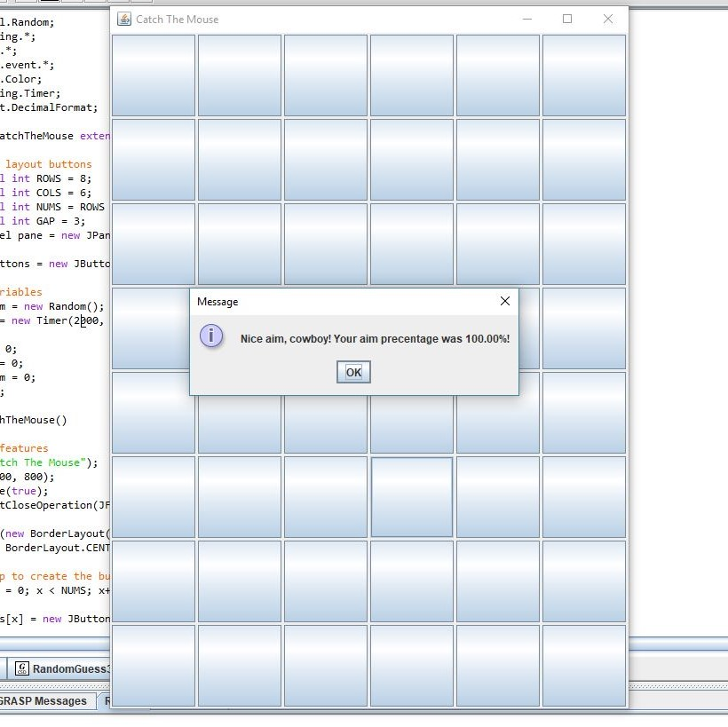

Sergio Gonzalez
Coding
CIS 263DA - Java Programming: Level II - Catch The Mouse
Create a game that helps new mouse users improve their hand-eye coordination. Within a JFrame,display an array of 48 JPanels in a GridLayout using eight rows and six columns. Randomly display an X on one of the panels. When the user clicks the correct panel (the one displaying the X), remove the X and display it on a different panel. After the user has successfully "hit" the correct panel 10 times, display a congratulatory message that invludes the user's percentage (hits divided by
clicks.) Use 48 JButtons instead of an array of 48 JPanels. Once the user clicks on the tenth correct button, display your name, course, section number, and MEID by using a JOptionPane message dialog.
Check out Catch The Mouse
CIS 263DA - Java Programming: Level II - Lottery

Create a lottery game application. Create a similar game using checkboxes. For this game, generate six check boxes to play the game. (Do not allow the user to choose more than six boxes.) Add a menu bar to the program with a File menu. In the File menu, add a submenu (JMenuItem) called About. When the user clicks on the About menu item, display a JOptionPane message dialog that contains your name, your course, the section number, and MEID. After the player has choseen six numbers, display the randomly selected numbers, the player's numbers, and the amount of money the user has won as follows:
Three matches = $100
Four matches = $10,000
Five matches = $50,000
Six matches = $1,000,000
Zero, one, or two matches = $0
Check out Lottery
CIS 263DA - Java Programming: Level II - Lucky 7s

Create an application that plays a card game named Lucky Seven. In real life, the game can be played with seven cards, each containing a number from 1 through 7, that are shuffled and dealt number-side down. To start the game, a player turns over any card. The exposed number on the card determines the position (reading from left to right) of the next card that must be turned over. For example, if the player turns over the first card and its number is 7, the next card turned must be the seventh card (counting from left to right). If the player turns over a card whose number denotes a position that was already turned, the player loses the game. If the player succeeds in turning over all seven cards, the player wins. Keep a tally that shows the number of games that the player has won, tied, or lost.Use the drawString() method to display your name, course, section number, and MEID in the lower left-hand corner of the applet.
Instead of cards, you will use seven buttons labeled 1 through 7 from left to right.
Randomly associate one of the seven values 1 through 7 with each button. (In other
words, the associated value might or might not be equivalent to the button’s
labeled value.) When the player clicks a button, reveal the associated hidden
value. If the value represents the position of a button already clicked, the player
loses. If the revealed number represents an available button, force the user to click
it; that is, do not take any action until the user clicks the correct button. After a
player clicks a button, remove the button from play. (After you remove a button,
you can call repaint() to ensure that the image of the button is removed.)
Check out Lucky 7s
CIS 263DA - Java Programming: Level II - Tic-Tac-Toe

Tic-Tac-Toe is a game played on a grid that contains three rows by three columns.
When a player gets three of their values across, down, or diagonal, they have won
the game. Create a java version of this game by using Gridlayout that is constructed
with three columns and three rows. The user will go first. When the user selects a
cell, put an "x" in that cell. Next, randomly add a 0 to a cell to mock the computer
playing.
Check out Tic-Tac-Toe
CIS 166AA - JavaScripting - Calculator
In a file called calc.html, create a simply calculator. Using techniques from the chapter, use text boxes to get two numbers, then allow the user to click a button for the operation they wish to complete: addition, subtraction, multiplication, or division. Output the result to a third textbox.
Check out Calculator
CIS 166AA - JavaScripting - Pizza Price
Create a file that displays a form for placing a pizza order. At a minimum, include the following:
- Customer's name, using a text box
- Radio buttons for choosing a size: large, medium, small, or personal
- A list box OR dropdown list for selecting the type of crust: thin, regular, pan, or stuffed
- Check boxes for toppings, with at least for to select.
- A button for placing the order.
Add text to indicate prices from the different options.
For example, a large pizza may be $15, while a medium is $12. Additional options should result in small add-on charges (ex: $1 per
topping). All orders should add a 10% sales tax.
When you user click the button to place the order, use an alert box, text box, or text area to output a description of the order and a total price.
Check out Pizza Price